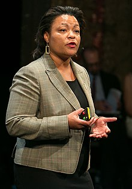

The holiday of Mardi Gras is celebrated in all of Louisiana, including the city of New Orleans. Celebrations are concentrated for about two weeks before and through Shrove Tuesday, the day before Ash Wednesday (the start of lent in the Western Christian tradition). Usually there is one major parade each day (weather permitting); many days have several large parades. The largest and most elaborate parades take place the last five days of the Mardi Gras season. In the final week, many events occur throughout New Orleans and surrounding communities, including parades and balls (some of them masquerade balls).
LaToya Cantrell
LaToya Cantrell (née Wilder; born April 3, 1972) is an American politician serving as the Mayor of New Orleans, Louisiana since May 7, 2018. A Democrat, Cantrell is the first woman to hold the office. Before becoming mayor, Cantrell represented District B on the New Orleans City Council from 2012–2018
